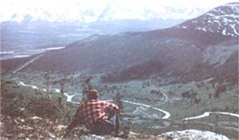

Frank enjoys a break after a morning spent hiking and prospecting. This picture was taken along North Canal Road. At this point, we hadn't yet been flown to our ultimate destination . . . the truly isolated ? and beautiful ? northeast Yukon